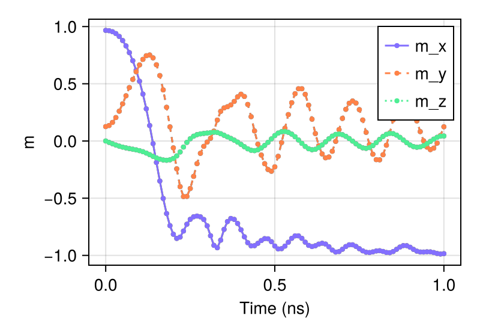

标准问题 4
使用 sim_with 模拟标准问题 4
using MicroMagnetic
using CairoMakie
@using_gpu() # 导入可用的 GPU 软件包，如 CUDA、AMDGPU、oneAPI 或 Metal
mesh = FDMesh(; nx=200, ny=50, nz=1, dx=2.5e-9, dy=2.5e-9, dz=3e-9); # 定义离散化网格
sim = Sim(mesh; driver="SD", name="std4") # 创建模拟实例
set_Ms(sim, 8e5) # 设置饱和磁化强度
add_exch(sim, 1.3e-11) # 添加交换相互作用
add_demag(sim) # 添加退磁场能
init_m0(sim, (1, 0.25, 0.1)) # 初始化磁化
relax(sim; stopping_dmdt=0.01) # 第一步：弛豫得到 "S" 态
set_driver(sim; driver="LLG", alpha=0.02, gamma=2.211e5)
add_zeeman(sim, (-24.6mT, 4.3mT, 0)) # 第二步：施加外磁场
run_sim(sim; steps=100, dt=1e-11, save_m_every=1) # 运行 100 步动力学模拟
ovf2movie("std4_LLG"; output="std4.mp4", component='x'); # 生成动画